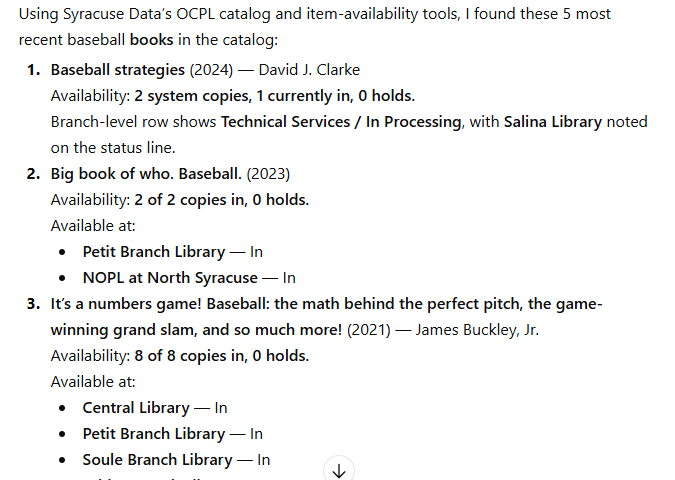

01
Search city data
Discover Syracuse datasets, inspect ArcGIS services, and query public records from both curated and raw sources.
Built for Syracuse & Onondaga County
Datacuse MCP gives AI assistants one reliable way to search Syracuse data, explore library services, and connect local questions to trusted public sources.
Open-source friendly · Local-first · No account required for public data
1 copy available now. Catalog and branch records checked moments ago.
One connection, many systems
Datacuse MCP keeps each source honest while making them feel like one coherent civic data layer.
Discover Syracuse datasets, inspect ArcGIS services, and query public records from both curated and raw sources.
Find branches, events, catalog items, and availability—then continue into account-assisted workflows when needed.
Connect local analysis to selected Census, labor, health, county, state, and federal sources.
Designed around real work
The server handles the messy middle: finding the right system, understanding its shape, and returning a useful result.
Use the language you would use with a colleague, not an API manual.
Datacuse chooses a city, library, county, state, or federal tool.
It resolves the relevant dataset, record, event, item, or workflow.
You get a clear answer grounded in the original public system.
Zero-build local preview
Clone or download the folder, then start the included dependency-free local server. The same files can be uploaded to any static host.
node server.mjs
# Open http://localhost:4173Also works with npm start. No install, build, framework, or environment variables required.
Working examples



Public data is usually available in theory and painful in practice. Cities publish dashboards, ArcGIS services, CSV downloads, PDFs, portals, and one-off department pages. Libraries run separate catalogs, events systems, and reporting sites. The data is real, but using it across systems still takes too much manual work.
Datacuse MCP treats the local data ecosystem as connected but genuinely different systems. ArcGIS layers, catalog results, branch pages, events, annual statistics, and account actions are not forced into one fake abstraction. Shared discovery helps where it should; domain-specific tools handle the rest.
It is local and practical: find the right dataset, inspect records, locate a library item, and verify an outcome.
Local public-data work is rarely a single API call. It is a chain: find the right source, understand it, resolve the right record, take the next action, and confirm the result. MCP gives an AI assistant a structured way to use the right capability at the right time.
Datacuse MCP is not an official city or library product, a production civic data warehouse, or a substitute for secure multi-user authentication. It depends on upstream public systems that can change.
The same pattern can extend to more local sources, deeper state and federal integrations, and safer hosted workflows. It can work for any community whose public information is fragmented across portals, services, dashboards, and operational tools.
Public data becomes much more useful when it stops being a scavenger hunt.